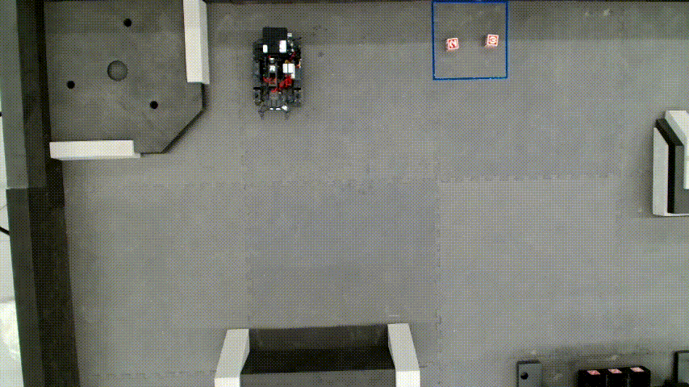

About me
Hi there, I'm Yongqian Wu (吴勇前), currently an undergraduate student in Intelligent Science and Technology at Xidian University.
Now I'm working at NJU-3DV, supervised by Hao Zhu.
Since August 2024 to July 2025, I worked as a research intern at SmarT Autonomous Robotics Group(STAR), supervised by Boyu Zhou.
My primary research interest is 3D Computer Vision.
Education
- B.Eng , School of Intelligent Science and Technology, Xidian University
Xi'an, 2022.09 - present
Selected Projects
-
IRobot-Sim2Real-2024
Sim2Real-based Automated Single-Arm Robot



-
sentry_navigation
Autonomous Navigation Across Uneven Terrain in Dynamic Environments


Selected Awards
- National Scholarship
top 1%, Ministry of Education of P.R. China, 2024 - National University Students Robotics Competition, RoboMaster
Second Prize, DJI, 2023, 2024 - ICRA Competition RoboMaster University Sim2Real Challenge
Third Prize, AIR, THU, 2024 - Mathematical Contest in Modeling
Honorable Mention, COMAP, 2024